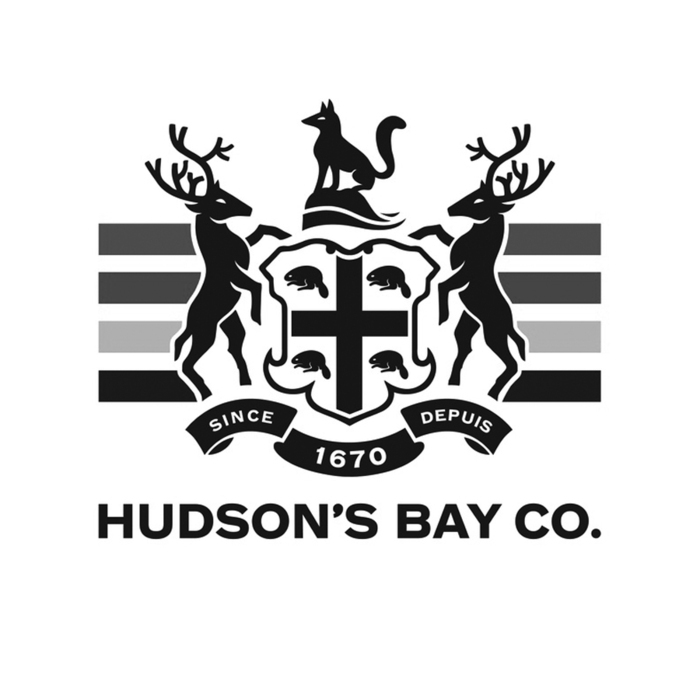
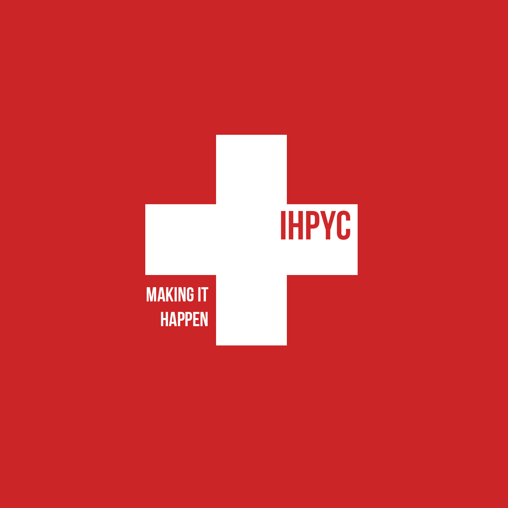

Portfolio
A portfolio of some of the projects I have undertaken

Autonomous Motion
Sensor Interfacing • Arduino

Mindful Me
Hackathon Finalist


Experience
An overview of my experience
-
Love Closely - Software Developer Intern
May 2018 - August 2018
Created web ecommerce store for the brand. Implemented Javascript, React.js, HTML, CSS to create a appealing web store. Assisted in mobile iOS app development using Swift and researched Apple Pay integration. Built login system for product releases using PHP, MySQL and implemented spam filter to prevent bots
-

Sales Consultant - Hudson's Bay
April 2018 - August 2018
Operate a point of sales system in order to process purchases. Interact with guests and create a clintele. Demonstrated communication skills and built leadership skills by helping department reach its annual sale goals.
-
Data Analyst Intern - Humanity First
November 2017 - February 2018
Developed AI user support chat bot with DialogFlow and Google Cloud Platform which answers common customer questions. Utilized Python and BeautifulSoup to scrape over 80 websites, analyzed data using Pandas and made reports using Excel. Liaised between 4 departments to deliver tasks ahead of schedule which increased time for fundraising, resulting in 40% sales boost
-

International Humanitarian Peel Youth Council
October 2016 - May 2017
Act as a Red Cross associated body and work towards initiatives to solve current world issues. Organize and advertise fundraisers as well as fundraising events in order to raise money to help global initiatives.
-
Guest Services Associate - Cedar Fair
July 2016 - August 2018 (Seasonal)
Developed proficient time management and organizations skills when dealing with large number of guests in day who require different needs (disability needs, food restrictions). Developed excellent speaking skills when talking to guests about their inquiries, complaints and requests.
-
Nature Corps - TDSB
September 2015
Work with a team and restore nature conservation areas. Plant trees in lacking spaces as well as maintain trees. Eliminate invasive species with precision, and maintain hiking trails.
-

School Rep - Me To We
September 2014 - January 2015
Brainstormed and executed ideas which made a positive impact on students and helped others by motivating and empowering them to potentially change the world. Attended annual We day and took my knowledge from the event and shared it with my classmates.
-
The
Beginning
Interests
A range of my pass-time activities and hobbies
Interests
Things that catch my attention
Hobbies
Activities I do in my free-time
Aspirations
Future goals
There are many words that can be used to describe myself, but I would narrow it down to a passionate, determined individual with a drive and a need to help others. I love to learn new things and explore different fields, gaining knowledge to create innovative solutions to problems in our society. I love reading about technology advances and new findings in the fields of technology, science and biology. Furthermore, I find interest in software development, UI/UX design, CAD design, and overall, consider myself a tech enthusiast. I truly believe that anything is possible with the right mindset and determination/drive. I hope to have future experiences as a software developer and potentially move on to project management. I also will enroll in a CS minor equivalent to further my knowledge on computer systems and software. It is my dream to work for a big tech company like Tesla, Google, Microsoft, Apple etc. and help advance technology.